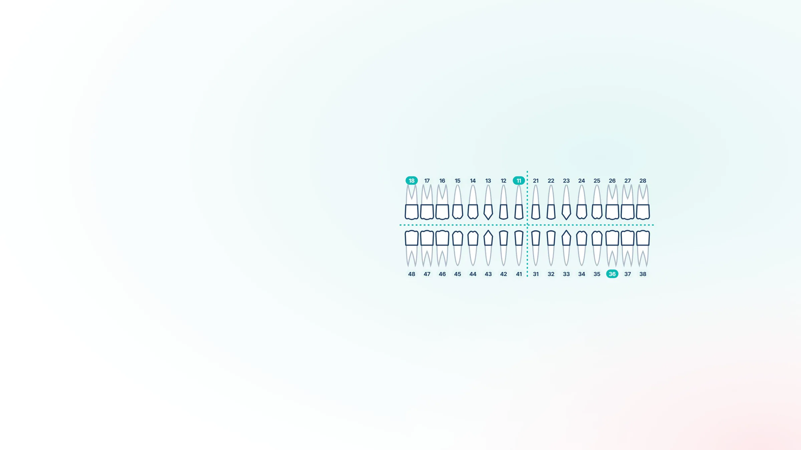
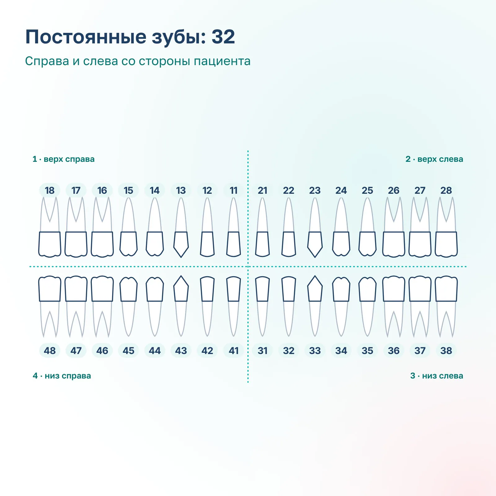
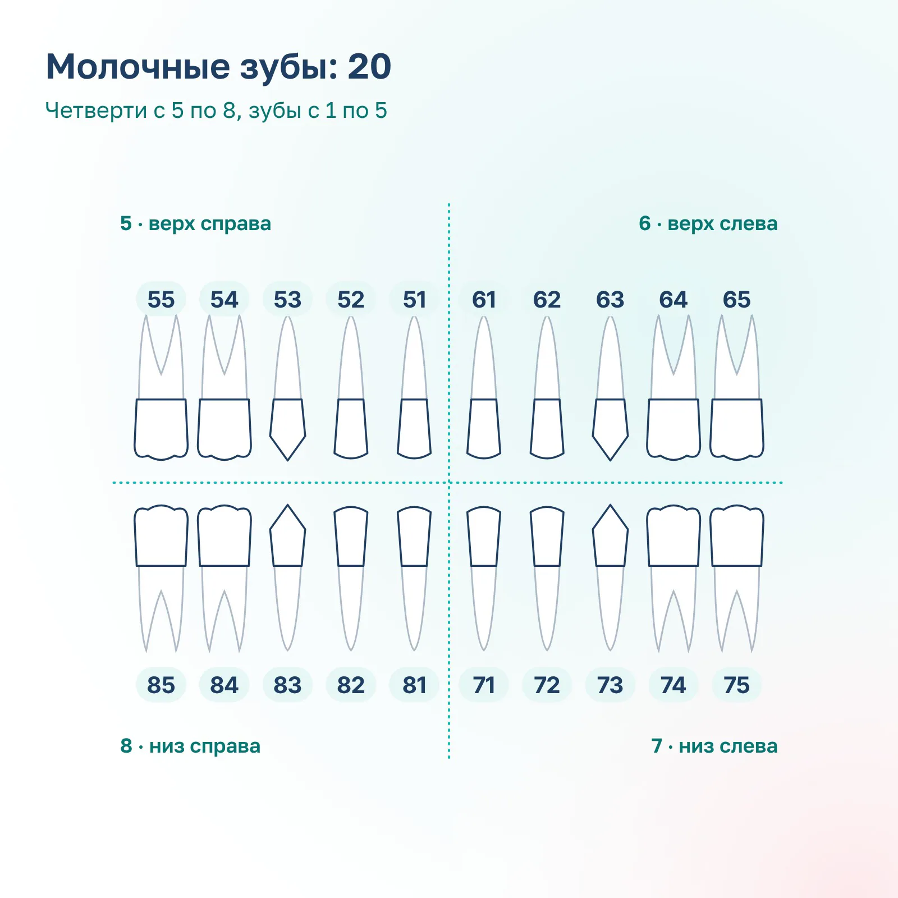

1 · центральный резец
Передний зуб в центре, «единичка».

Как читать номер зуба в снимке, плане лечения или медицинской карте: схема нумерации зубов у взрослых и детей от стоматологии «Вайтис» в Одинцово.
Номер состоит из двух цифр: первая показывает четверть челюсти, вторая зуб по порядку от центра. Клиника на ул. Северная, д. 5, корп. 4 (ЖК «Одинбург»), приём ежедневно с 9:00 до 21:00.
Имеются противопоказания. Необходима консультация специалиста.

В России врачи пользуются международной двузначной системой нумерации зубов (FDI). Челюсти делят на четыре четверти, в каждой по 8 зубов.
1 верхняя правая, 2 верхняя левая, 3 нижняя левая, 4 нижняя правая. Право и лево считают со стороны пациента.
От центра к краю: 1 центральный резец, 8 зуб мудрости.
Номер читают по цифрам: 36 звучит как «три-шесть», это первый моляр снизу слева.
На схеме зубы показаны так, как их видит врач, сидя напротив: правая сторона пациента на картинке слева.
Вторая цифра номера одна и та же во всех четвертях: например, 16, 26, 36 и 46 это четыре «шестёрки».
Передний зуб в центре, «единичка».
Рядом с центральным, «двойка».
«Тройка» с самым длинным корнем. Верхние клыки называют глазными зубами.
«Четвёрка», малый коренной зуб.
«Пятёрка», малый коренной зуб.
«Шестёрка», большой коренной зуб. Прорезается около 6 лет.
«Семёрка», большой коренной зуб.
«Восьмёрка», или зуб мудрости. Есть не у всех, может не прорезаться.
Вторая цифра номера одна и та же во всех четвертях: например, 16, 26, 36 и 46 это четыре «шестёрки».
Передний зуб в центре, «единичка».
Рядом с центральным, «двойка».
«Тройка» с самым длинным корнем. Верхние клыки называют глазными зубами.
«Четвёрка», малый коренной зуб.
«Пятёрка», малый коренной зуб.
«Шестёрка», большой коренной зуб. Прорезается около 6 лет.
«Семёрка», большой коренной зуб.
«Восьмёрка», или зуб мудрости. Есть не у всех, может не прорезаться.

У детей 20 молочных зубов, по 5 в каждой четверти. Четверти обозначают цифрами с 5 по 8, вторая цифра так же идёт от центра.
Справа зубы с 55 по 51, слева с 61 по 65.
Слева зубы с 71 по 75, справа с 81 по 85.
1 и 2 резцы, 3 клык, 4 и 5 молочные моляры.
Молочные моляры сменяются постоянными премолярами, а постоянные шестёрки прорезаются позади них около 6 лет и ничего не заменяют. Поэтому лечение молочных зубов не откладывают.
Номер нужен, чтобы врач, пациент и другой специалист говорили об одном и том же зубе.
На прицельном снимке, панорамном снимке и КТ зубов зубы подписывают номерами.
У каждого пункта плана стоит номер зуба: например, «36: лечение кариеса».
Номера записывают в карту, чтобы любой врач понял, какой зуб лечили.
Если стоматолог-терапевт направляет к хирургу или ортопеду, он указывает номер зуба.
Номер нужен, чтобы врач, пациент и другой специалист говорили об одном и том же зубе.
На прицельном снимке, панорамном снимке и КТ зубов зубы подписывают номерами.
У каждого пункта плана стоит номер зуба: например, «36: лечение кариеса».
Номера записывают в карту, чтобы любой врач понял, какой зуб лечили.
Если стоматолог-терапевт направляет к хирургу или ортопеду, он указывает номер зуба.
Спросите врача на приёме: он покажет зуб на снимке или в зеркале и объяснит каждый пункт плана лечения.
Найдите номер на схеме выше: первая цифра четверть, вторая зуб.
На КТ зубов виден каждый зуб и его корни.
Врач объяснит, что и в каком порядке лечить.
Номера зубов есть в плане лечения у каждого врача клиники. Если план непонятен, запишитесь на консультацию: врач объяснит каждый пункт.
Как понять номер зуба?
Первая цифра показывает четверть челюсти: 1 верх справа, 2 верх слева, 3 низ слева, 4 низ справа. Вторая цифра означает зуб по порядку от центра: 1 центральный резец, 8 зуб мудрости.
Какой зуб 36?
Первый большой коренной зуб (моляр) на нижней челюсти слева, «шестёрка».
Какой зуб 46?
Первый моляр на нижней челюсти справа.
Какие номера у зубов мудрости?
18 и 28 на верхней челюсти, 38 и 48 на нижней.
Почему на схеме право и лево наоборот?
Схему рисуют так, как зубы видит врач, сидя напротив пациента. Поэтому правая сторона пациента на схеме слева.
Сколько зубов у взрослого человека?
32 вместе с зубами мудрости и 28 без них. Зубы мудрости есть не у всех.
Как нумеруются молочные зубы?
Тоже двумя цифрами, но четверти обозначают цифрами с 5 по 8. Например, 54 это первый молочный моляр сверху справа.
Какая ещё бывает нумерация зубов?
В американской системе зубы нумеруют подряд от 1 до 32, в схеме Зигмонди–Палмера номер пишут внутри уголка, который показывает четверть. В медицинских документах в России обычно используют двузначную систему.
Имеются противопоказания. Необходима консультация специалиста.
Каждая услуга открывается отдельной страницей с ценами, этапами лечения и ответами на вопросы. Нажмите на название, чтобы прочитать.
Непонятен план лечения? Запишитесь на консультацию
Записаться на консультациюАдрес и как добраться. ул. Северная, д. 5, корп. 4 (ЖК «Одинбург»). МЦД-1 «Одинцово», автобусы и маршрутки до остановки «Комбинат бытового обслуживания», дальше пешком по Северной. Приём ежедневно с 9:00 до 21:00.
Имеются противопоказания. Необходима консультация специалиста.
Оставьте телефон, администратор перезвонит и подберёт врача и удобное время.
Подойдёт КТ, панорама, прицельный снимок или фото плана лечения из другой клиники. Врач посмотрит и ответит в течение рабочего дня.
Врач осмотрит, при необходимости сделает снимок и назовёт цену лечения. Оставьте номер, администратор перезвонит и подберёт время.
Цену лечения вы узнаете до его начала